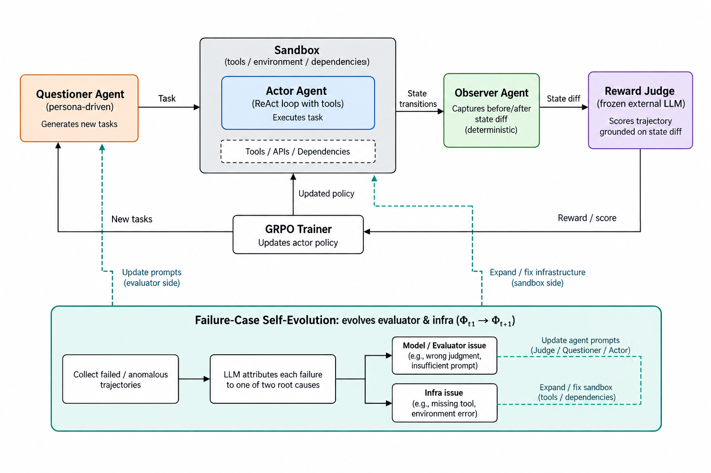
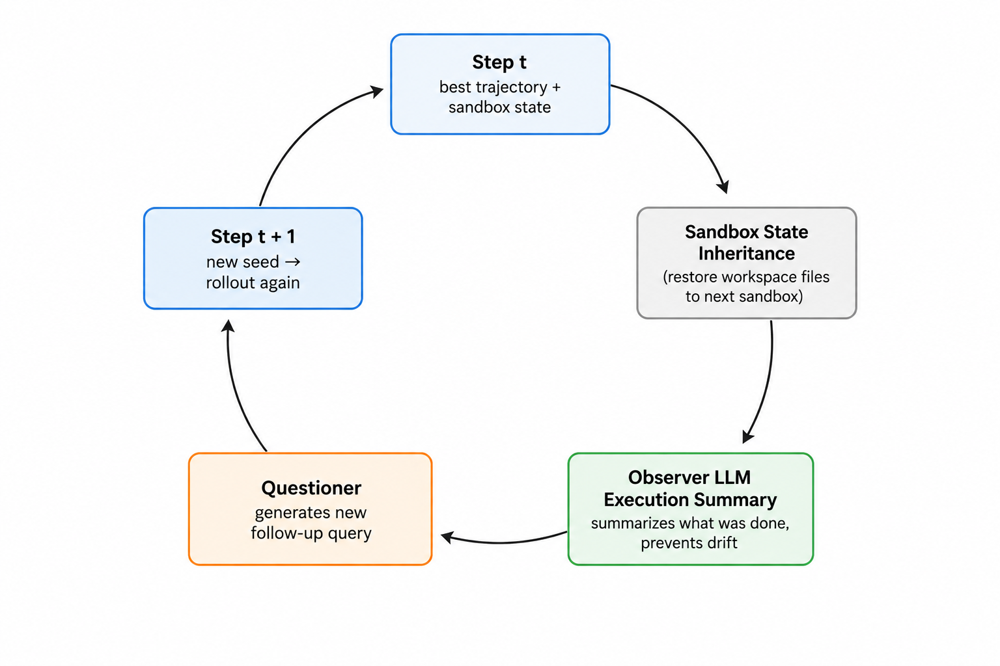
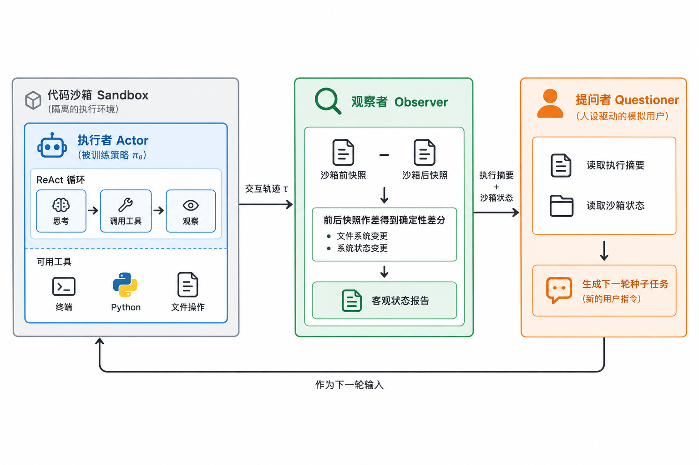
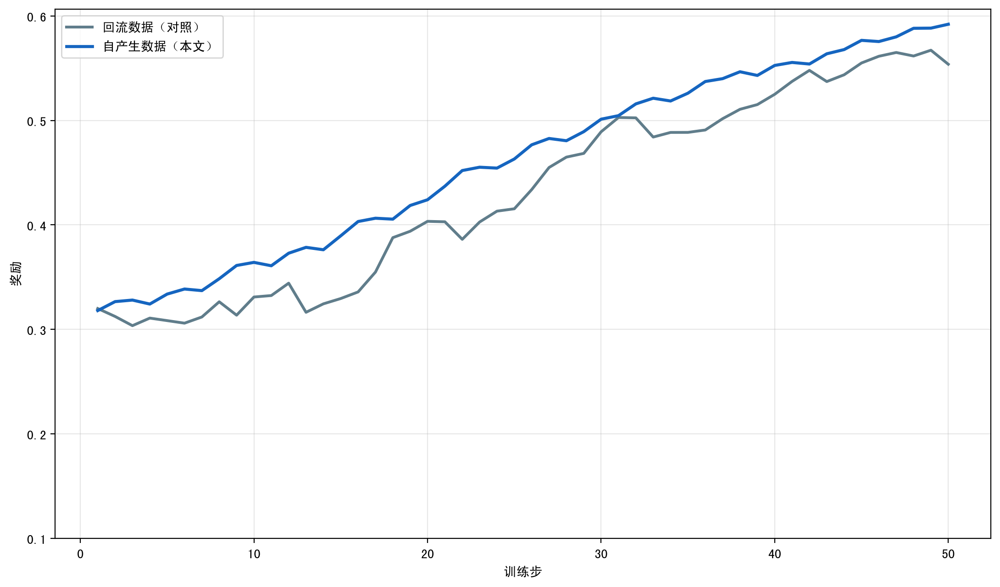
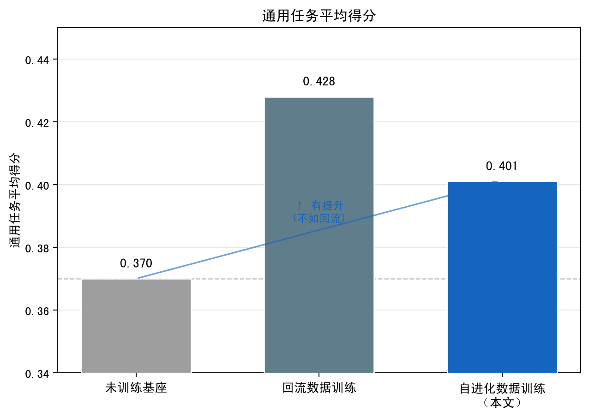

Autonomous data, trustworthy rewards, and a self-sustaining loop — without human annotation.
LLM agents accomplish tasks through multi-step tool use in real environments such as code sandboxes, where reinforcement learning is the dominant path to continuous improvement. Yet RL for interactive agents faces a fundamental bottleneck: both training data and trustworthy rewards are hard to obtain at scale by human effort. Real data accumulates slowly with narrow coverage, and rewards that rely on agent self-reports invite reward hacking. We present a self-evolving RL system that lets agents autonomously generate training data, obtain trustworthy rewards, and produce next-step tasks — extending the object of self-evolution from policy alone to task, policy, evaluator, and infrastructure. Validated end-to-end on Qwen3.5-9B, the full pipeline runs from a small seed set with no external data, and an independent benchmark confirms a real capability gain over the untrained base model.
Four mechanisms turn a fixed-data RL loop into a self-sustaining evolutionary one.
Every post-seed task grows on the previous step's real outputs: best-trajectory sandbox state is truly inherited, and a persona-driven questioner generates the next task from summarized experience.
An actor solves via ReAct, an observer computes deterministic state diffs, a questioner asks follow-ups — making sampling, attestation, and follow-up fully self-driven.
A frozen judge scores from real environment state diffs, not self-reports. Pure verbal hacking is provably blocked: any reward gain requires a real change in the environment.
Failure cases are attributed by an LLM to the model side or infra side, then drive incremental prompt revision or distillation of missing capabilities into reusable skills.
Three collaborating agents, a code sandbox, a frozen judge, and a GRPO trainer — connected through the RL framework's official injection points.



One end-to-end run on Qwen3.5-9B, observed along multiple dimensions.


Standard GRPO on verl 0.8.0 (pip-installed, no fork), custom rollout via official injection points.
# install (src-layout: src/ + agents/)
pip install -e ".[dev]"
# CPU unit tests
pytest
# 4-GPU debug smoke (rollout → reward → GRPO update), run in tmux
tmux new -d -s smoke 'bash scripts/train_4gpu.sh configs/run/agent_rl_4gpu.yaml'